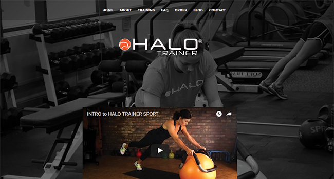

Merrithew Health and Fitness
2015-09-01

Freelance Project
While working full-time at HCCMIS I met Dan Giffin from the marketing department.
Dan said his physical therapist Bryce Taylor was looking for someone to rebuild his website. Bryce had invented an exercise bar and had hired a separate company to manage the sales for him. At the time his website was not easy to update or manage. He wanted something better.
I told Dan I'd be willing to setup a Wordpress website with a Theme of his choice. Once it was up and running he'd be able to add images and content himself.
I had a short meeting with Bryce. We talked about what he wanted, reviewed my contract, and settled on a price. Then he hired me.
Technology
Bryce already owned the domain he wanted to use. I copied all the text and images from his existing site and saved them to a folder locally.
He gave me access to his GoDaddy account. I installed Wordpress, added the theme he purchased, uploaded all the assets, and copied over his content. I added a few plugins to secure his site and monitor his SEO for posts and pages.
Design
His existing logo had a solid square white background.
This didn't look good on the new black background he wanted to use. I used Adobe Illustrator to rebuild the logo as a transparent PNG.
I had to track down the original font used because he didn't know what it was.
When the logo was ready I added it to the home page.
Conclusion
Through out the process I sent Bryce progress updates.
The whole project took a couple of days. Once completed Bryce started updating and managing the site on his own.